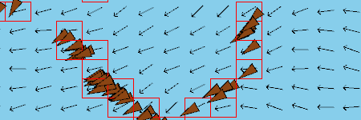

Hello there!
I am Fera, and this is the repository of my hobby programming projects. As the title suggests, you will mostly find simulations and games here. Things, that with a slight exaggeration can be considered as little "cosmoses". Feel free to look around :)
Wolfram heart [October 12th 2018] [Processing/Java]

This animation is a visualization of the Wolfram elementary cellular automata. As in the Game of Life, that can be seen below, the state of a particular cell is determined by the state of its neighbors. Unlike Life though, here the "cells" are placed in a row instead of a matrix. A traditional representation of the simulation is rendering consecutive generations below each other, this creates a fractal structure known as the Sierpiński triangle.
I thought what would happen if I render the cells in a circular manner from the outside in. The resulting shape reminded me of a heart, therefore I turned the whole thing upside down, and fine-tuned the ratios untill I got this result.
View
GitHub
Flocking simulation [June 24th, 2018] [Processing/Java]

In this simulation, I have implemented Craig Reynolds's "steering behaviors". These rules are a simple and elegant way to describe the complex and organic motion of the brown triangles. The collective bird flock or fish school like behavior is just an illusion. The underlying logic is more like a fluid simulation. None of the agents is aware of the state of its neighbors. A hidden river-bed like field coordinates their cohesive movement.
Futtatás
GitHub
Meteorids [March 30th, 2018] [Processing/Java]
Another classic game remake. I tried to recreate the minimalistic graphic design of the original. A little gameplay addition: If you fire for an extended period of time, the gun will overheat and will become unusable for a while.
I managed to use several newly learned concepts. For example, I created a primitive physics engine that can calculate the velocity, acceleration, friction, and thrust of the in-game objects. Jeff Thompson's Collision detection algorithms were used for the project.
| Controls |
Player 1 |
Player 2 |
| Turn left |
Left Arrow |
S |
| Turn right |
Right Arrow |
F |
| Thrust |
Up Arrow |
E |
| Shoot |
Space |
G |
Play
Download
GitHub
Game of Life [Oktober 29th, 2017] [JavaScript] [Additional library: P5JS]

My take on the legendary Game of Life by mathematician John Conway. The rules of the game are really simple, yet high-level phenomena can emerge from the operation of such simple rules. The tiles on the grid are "cells". Each cell can either be dead or alive. the state of a cell determined by the state of its neighbors. A living cell can die by having less than three neighbors, as of isolation, or having more than four, as of overcrowding. Otherwise, the cell survives. When a dead cell has exactly three living neighbors it becomes alive. These rules are applied each frame simultaneously on every cell.
Groups of cells "species" can be identified as time passes. These multi-cellular entities can exhibit some peculiar emergent qualities, that were not present in the starting set of rules. Movement, growth, reproduction, maybe even intelligence? In any case, it is fun to watch.
| Controls |
|
| Start/Stop |
Space |
| Randomize |
Ctrl |
| Draw cells |
Mouse 1 |
Run
GitHub
Alien Aggressors [Oktober, 2017] [JavaScript] [Additional library: P5JS]

My first game remake. As you might have guessed it is a tribute to the classic Space Invaders. It is not perfect, but it turned out to be quite playable. The game has a local multiplayer mode, so if you are up for some couch co-op fun give it a go. Special thanks to Balage for the cool art design.
| Controls |
Player 1 |
Player 2 |
| Left |
Left Arrow |
X |
| Right |
Right Arrow |
C |
| Shoot |
Space |
Y |
Play
GitHub